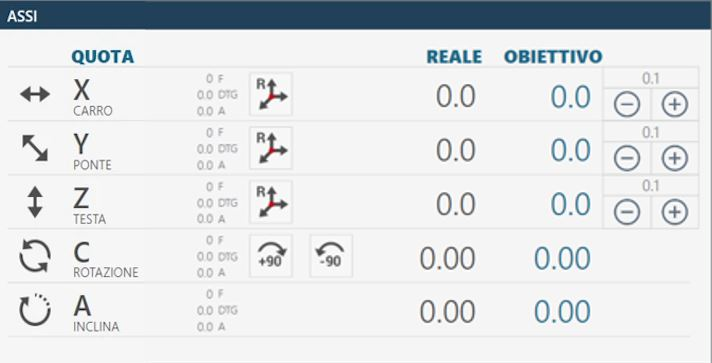
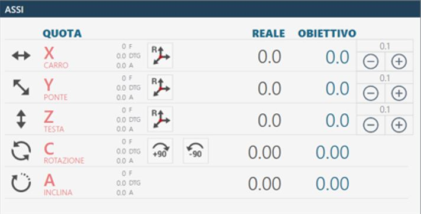
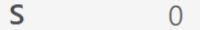
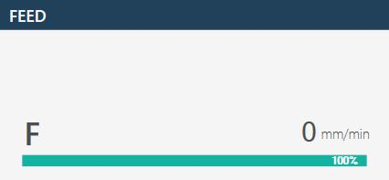

Au démarrage de l’application, si le référencement des axes a déjà été effectué, l’écran initial suivant s’affiche :
Barre supérieure
Paramètres Permet d’accéder aux paramètres du programme Parametrix.
Paramètres outil Appuyer sur le bouton pour accéder à la page des paramètres de l’outil. Se reporter au chapitre « Configuration de l’outil » pour une description détaillée de la page des paramètres.
Rotation automatique 0/ 90 degrés L’axe « C » est automatiquement déplacé à 0 ou 90 degrés lorsque le bouton est enfoncé.
Mise en position de stationnement automatique Lorsque ce bouton est enfoncé, la machine déplace automatiquement les axes « X », « Y », « Z » et « C » en position zéro. Les déplacements sont effectués par la machine dans l’ordre suivant : (A) - Axe « Z » en position zéro absolu ; (B) - Axe « C » en position 0 absolu ; (C) - Axes « X » et « Y » simultanément en position zéro absolu ;
ATTENTION !
Pour effectuer la mise en position de stationnement automatique, certaines conditions de sécurité doivent être respectées :
La position de l’axe « A » doit être à 0_.
S’assurer que la zone de déplacement concernée par le positionnement (voir figure ci-contre) est libre.
Activation / Désactivation de l’eau interne Appuyer sur ce bouton pour activer l’eau à l’intérieur de l’outil. Le témoin au-dessus du bouton change de couleur : Vert = Activée ; Rouge = Désactivée.
Activation / Désactivation de l’eau externe Appuyer sur ce bouton pour activer l’eau du circuit principal. Le témoin au-dessus du bouton change de couleur : Vert = Activée ; Rouge = Désactivée.
Changement manuel d’outil Appuyer sur le bouton pour lancer la procédure de changement d’outil.
Maintenance Appuyer sur ce bouton pour afficher une fenêtre contenant toutes les opérations de maintenance de la machine. Les opérations de maintenance à effectuer ainsi que celles qui sont dans la norme s’affichent.
Aide Appuyer sur ce bouton modifie légèrement l’aspect graphique et le comportement de tous les boutons actuellement visibles. Il est alors possible d’appuyer sur n’importe quel bouton portant un petit point d’interrogation dans l’angle supérieur gauche pour afficher un bref message décrivant sa fonction. Pour quitter ce mode d’assistance, il suffit d’appuyer de nouveau sur le bouton « Aide ».
Éléments communs de l’interface
Les éléments de l’interface graphique communs aux différentes fonctions sont les suivants :
Axes
Cette interface affiche les valeurs des axes de la machine.
Exemple de l’élément d’interface « Axes » avec origine 0 et référencement des axes déjà effectué :

Exemple de l’élément d’interface « Axes » avec origine 0 et référencement des axes restant à effectuer :

Les éléments qui composent cette section de l’interface commune sont expliqués ci-dessous, en prenant comme référence le cas où les axes ont déjà été référencés.
Cote réelle : indique la position de l’axe par rapport à l’origine active. Cote cible : indique la cote à régler pour effectuer le déplacement de l’axe en appuyant sur le bouton MDI ou RTCP. F : Feed, vitesse de déplacement exprimée en mm/minute. DTG : Distance To Go, distance jusqu’à la cible. A : Ampère.
Réinitialisation de l’axe Appuyer sur ce bouton pour définir le zéro de l’origine active à la position actuelle de l’axe correspondant (X, Y ou Z). La réinitialisation de l’axe ne peut être effectuée que sur des origines différentes de 0 (zéro). Pour utiliser l’origine en coordonnées outil (TCP), il est nécessaire d’avoir réglé les dimensions correctes de l’outil monté avant d’appuyer sur le bouton Réinitialisation de l’axe.
Rotation automatique _90 degrés La position de l’axe « C » est augmentée de 90 degrés dans le sens horaire. Exemple : la machine se trouve à 12 degrés ; en appuyant sur le bouton « Rotation automatique _90 degrés », la machine se positionne à 102 degrés : 12 _ 90.
Rotation automatique -90 degrés La position de l’axe « C » est diminuée de 90 degrés dans le sens antihoraire. Exemple : la machine se trouve à 102 degrés ; en appuyant sur le bouton « Rotation automatique -90 degrés », la machine se positionne à 12 degrés : 102 - 90.
Commandes
Ce panneau contient plusieurs boutons dont le fonctionnement est expliqué ci-dessous :
Mode interpolation Lorsque le bouton est actif (figure de droite), les mouvements manuels Z, C et A sont exécutés en tenant compte de la rotation et de l’inclinaison. Mouvement interpolé de l’axe Z : en actionnant le JOG de l’axe Z, la machine se déplace en restant alignée avec l’outil monté.
REMARQUE
Le type d’outil sélectionné influe sur la direction du mouvement.
Mouvement interpolé de l’axe C : en actionnant la commande de l’axe C, les axes X et Y se déplacent également en plus de la rotation, de sorte que le bord intérieur de la lame (ou la pointe de l’outil) reste immobile. Mouvement interpolé de l’axe A : en actionnant la commande de l’axe A, les axes X, Y et Z se déplacent également en plus de l’inclinaison, de sorte que le bord intérieur de la lame (ou la pointe de l’outil) reste immobile à sa position. Les mouvements simultanés des axes Z, C et A ne sont pas autorisés lorsque le mode interpolé est actif.
ATTENTION !
Faire très attention à l’état du bouton, car les mouvements de la machine peuvent différer de ceux attendus.
Interpolation RTCP Effectue un positionnement à la cote « Cible » définie pour la cote A ou C en maintenant immobile le bord intérieur de la lame (ou la pointe de l’outil). Pour plus de détails, voir le paragraphe : « Fonction semi-automatique RTCP Rotation Tool Center Point »
MDI Lorsqu’il est enfoncé, la machine se déplace jusqu’à atteindre les cotes définies comme cotes cibles (voir ci-dessus). La vitesse des axes X et Y est commandée par leurs potentiomètres respectifs, tandis que les autres axes sont commandés par le potentiomètre interpolé.
Outil
Cet élément de l’interface affiche les principales informations concernant l’outil monté sur la machine.
Exemple d’outil monté sur la machine : Disque
Exemple d’outil monté sur la machine : Foret carottier
Outil actif Cliquer sur ce bouton affiche une fenêtre contextuelle de confirmation permettant à l’opérateur de modifier le type d’outil monté sur la machine.
Le choix est limité à :
Disque
Fraise / Foret carottier
Origine
Cliquer sur le champ « Origine » affiche un petit pavé numérique à l’écran permettant à l’opérateur de sélectionner une autre origine de travail. Les valeurs d’Origine peuvent varier de 0 à 19 inclus.
Exemple avec origine 0 :
Exemple avec origine 10 :
Paramètres avancés de l’origine
Appuyer sur la touche d’options au-dessus de l’origine ouvre un panneau affichant une vue centralisée de toutes les origines disponibles et de leurs valeurs associées. Il est possible de changer l’origine active en cliquant sur la ligne correspondante.
RTCP - Rotation Tool Center Point
La fonction RTCP permet à l’opérateur d’effectuer un positionnement pour une coupe inclinée en maintenant la hauteur de l’outil inchangée, même lorsque l’inclinaison varie pendant le positionnement. Le bord intérieur du disque reste à la même position qu’au début du mouvement.
Procédure de fonctionnement
Régler la cote cible dans la zone dédiée à l’axe « A » (inclinaison) ou « C »
Appuyer sur le bouton RTCP lance la fonction d’inclinaison ou de rotation tout en maintenant fixe le point le plus bas de l’outil.
REMARQUE
Le déplacement via la commande RTCP n’est autorisé que lorsque la clé codée est insérée dans le poste prévu à cet effet, repérable sur la console opérateur.
Attendre que la machine se positionne à la cote définie.
Moteur
Cette section présente quelques statistiques concernant le moteur de la machine :

Tours par minute (RPM) Indique le nombre de tours par minute du moteur de broche. Si le sens de rotation est horaire, la valeur est positive ; s’il est antihoraire, la valeur est négative.
Consommation (A) Indique le courant absorbé par le moteur de broche.
Seuil d’alarme (A) Indique le seuil au-delà duquel l’alarme est activée et la rotation de la broche est bloquée.
Feed
La valeur Feed représente le déplacement interpolé de la machine.

Barre latérale droite
Au démarrage de l’application, la fonction présélectionnée est MANUEL. Cette barre latérale contient les commandes et programmes/fonctions disponibles suivants :
Barre inférieure
La barre inférieure affiche des messages d’information et d’erreur ainsi que certains boutons destinés à des fonctions spécifiques. Trois exemples de barre inférieure sont présentés ci-dessous :
Sans alarmes actives.
Avec une urgence générale activée, signalée par une icône, un code d’erreur (dans cet exemple PE0000), sa description et le bouton des alarmes clignotant à droite.
Avec un message affiché, dans l’exemple JOG direct actif.
Alarmes Permet à l’opérateur d’accéder à la fenêtre des alarmes.
Réduction du logiciel Permet à l’opérateur de quitter la page du logiciel.
Arrêt de la machine Permet à l’opérateur d’arrêter définitivement la machine.
Alarmes
La page des alarmes indique les Alarmes/Messages actifs du système. Si la machine ne présente aucune alarme active, la page est vide ; sinon, une ligne est affichée pour chaque erreur présente. La page d’exemple suivante, relative à la gestion et à l’affichage des alarmes, présente une alarme active dans le système :
Boutons des alarmes
Actualiser Permet d’actualiser l’état des alarmes de la machine.
Historique des alarmes Permet d’afficher l’historique quotidien des alarmes.
Messages / Alarmes Permet de choisir d’afficher les alarmes ou les messages.
Groupes d’alarmes Affiche les informations complètes relatives aux alarmes actuellement présentes sur la machine.
Affichage des alarmes - Standard
L’affichage standard d’une alarme comprend :
Lien en ligne Bouton comportant un lien vers le guide en ligne correspondant.
Code alarme Code d’identification du problème à l’origine de l’alarme.
Description Brève description de l’erreur détectée.
Affichage des alarmes - Historique
L’historique quotidien des alarmes comprend, outre les éléments déjà décrits, les données suivantes :
Moment du changement d’état Date et heure du changement d’état de l’alarme.
État de l’alarme État atteint par l’alarme (ON / OFF).
Affichage des alarmes - Groupes
Le système de regroupement affiche une seule entrée pour chaque alarme, afin d’éviter les doublons.
Nombre d’occurrences Nombre d’occurrences d’activation de l’alarme.
Moment de la première activation Date et heure de la première activation de l’alarme.
Moment de la dernière activation Date et heure de la dernière activation de l’alarme.